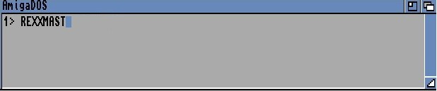

Firstly, open a CLI and type:
A welcome message should appear. Now enter the AMOS Professional environment and run a program containing some AREXX-compatible commands. Finally, press[Amiga] + [A] and run the program from the CLI prompt. This program could be an external application such as CED, or a purpose-built routine written in the AREXX programming language.
This example would run an AREXX program called Arexxdemo.REX:

When you return to AMOS Professional, you will be able to communicate with the external program using the commands that are ,detailed below.
AREXX-Compatible Instructions
AREXX OPEN
instruction: open an AREXX communication port
Arexx Open "PORT_NAME"
The AREXX OPEN instruction sets up an AREXX communication port, ready for immediate use. Before opening this channel, AREXX must be installed in memory using the REXXMAST command. If you are in any doubt as to the current availability of AREXX, its status can be checked by the AREXX EXIST function, explained below.
"PORT NAME" refers to the name of the communications port to be opened, and it should be in upper case. The name should be less than 32 characters long, and AMOS Professional will ignore any characters with an Ascii code below 32.